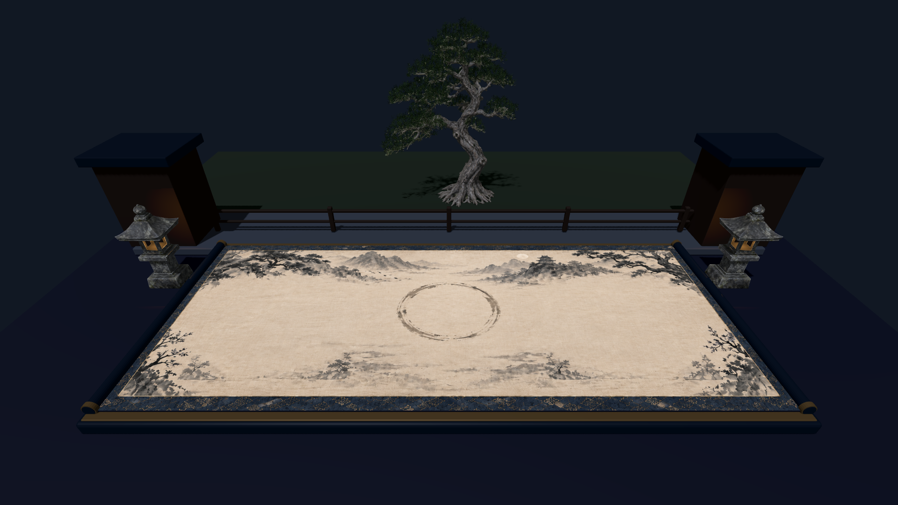
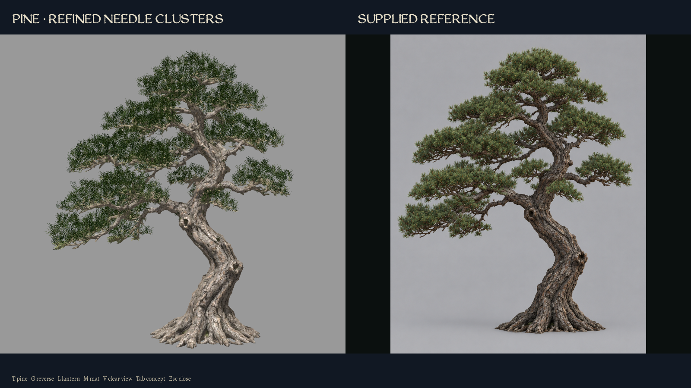
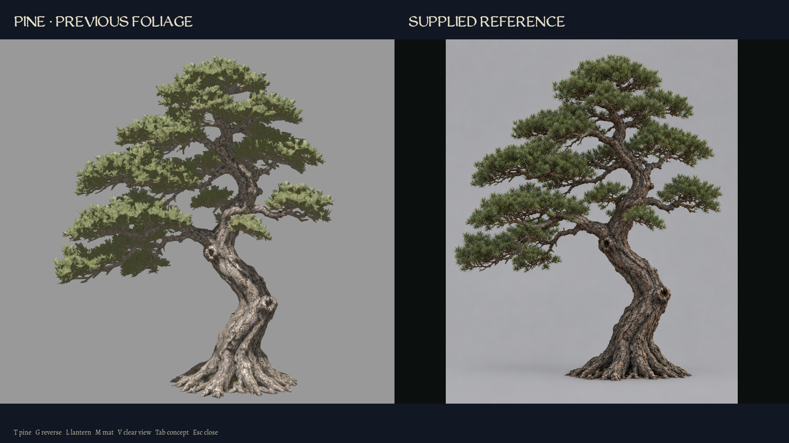
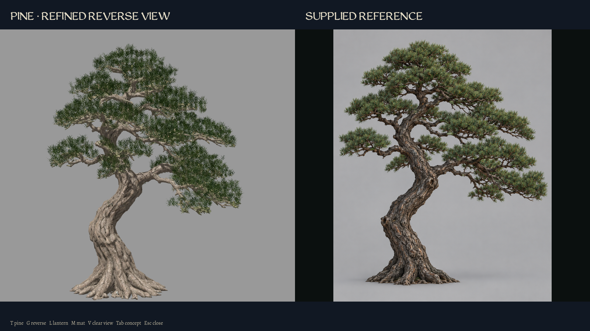
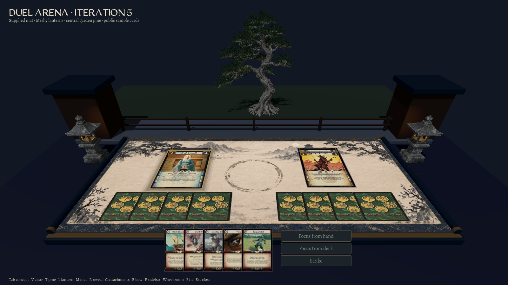
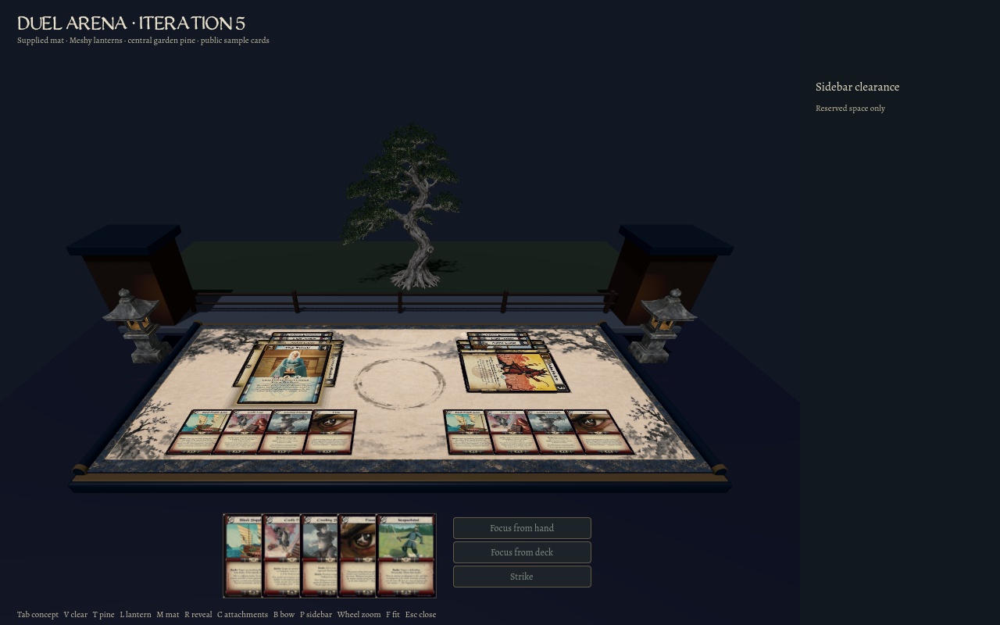
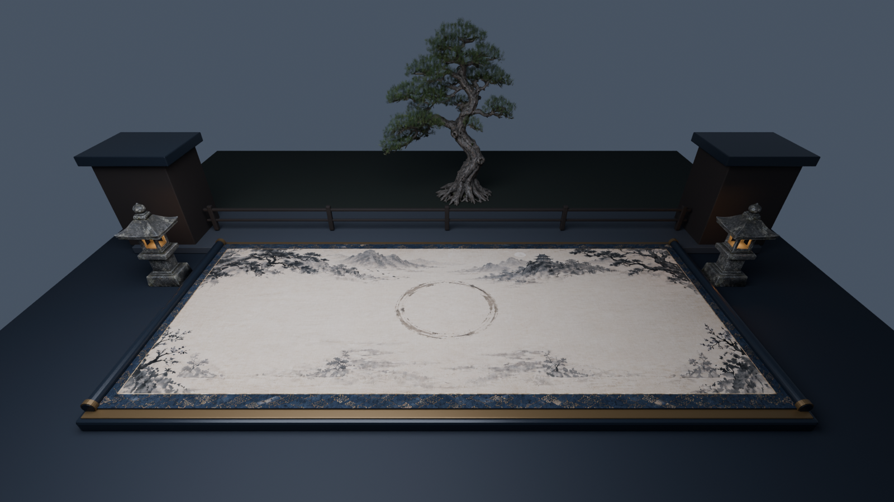

Duel arena — iteration 5 One larger central pine replaces the matching pair. Blender needle refinement used no additional Meshy generation or credits. Original source and prior iterations are preserved; final human art acceptance remains open.
Single central pine 
The complete crown, trunk and roots are visible on level ground behind the terrace; the mat and lanterns are preserved. Refined foliage — primary view 
Open paired needles with retained Meshy wood. Neutral native lighting beside the supplied image. Earlier foliage — same lighting 
The original v4 canopy, shown in the same comparison setup. Refined foliage — reverse view 
The supplied reverse image is a generated reference, not a measured view. Normal card layout 
1600×900, full-tree framing and verified projected card click. Crowded card layout 
1280×800, full tree visible with attachments, bow, reveal and sidebar clearance. Editable Blender assembly 
Cycles render. Remaining architecture and final atmosphere are still unfinished.